Events affect the course of the process or process stages. They can start, pause, or end the flow of the process. On a process diagram, events are represented by circles. There are three main types of events: start, intermediate, and end.
Start event

A start event initiates the launch of a process and indicates where it begins. A process can have only one start event.
In the start event, you can configure the process execution parameters: enable scheduling and set a template for the naming of instances. The specified parameters will also be displayed in the process settings.
Additionally, the start event determines the process start form. By default, when starting a process manually, the user sees a window with a button to start the process without additional data. The button’s name matches the label of the transition that connects the start event to the next activity.
You can customize the start form: place properties from the process context on it and set the form template. After that users can fill in fields and immediately pass the necessary values to the process.
For example, for the Leave request process, a start form is configured. The user clicks the process start button and sees a window with fields added to the form. After entering the vacation information, the employee clicks the Start button. The vacation approval process instance launches with the entered data.
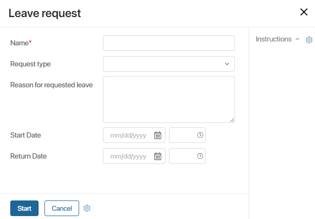
To open the start event settings, double-click on the event graphic element in the process diagram.
General tab
This tab includes general information about the process:
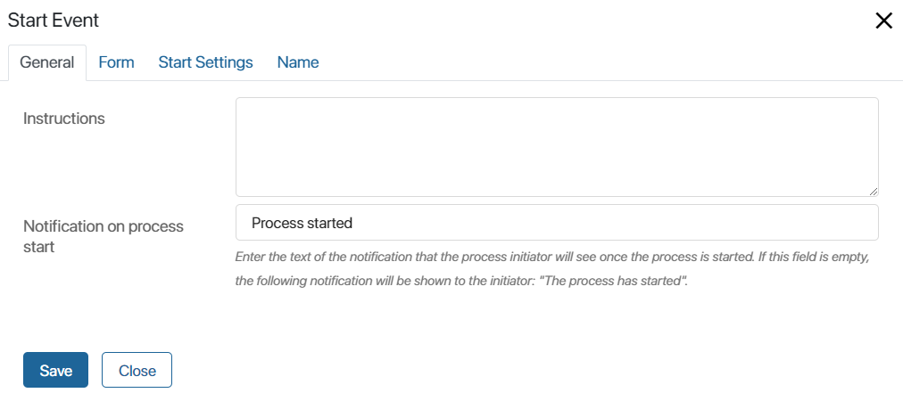
- Instructions. A brief description of the process or a guide for filling out the fields, which is displayed on the start form.
- Notification on process start. A notification that the user will see at the top of the screen after starting the process.
Form tab
On this tab, you can configure what the start form includes. Set up the form in the same way as for the Task activity.
The Context column displays all variables from the process context. Drag the properties that will be displayed on the start form into the Name on form column. To create a new variable, click the + Add button. The variable will appear in the process context, and you can use it in other activities.
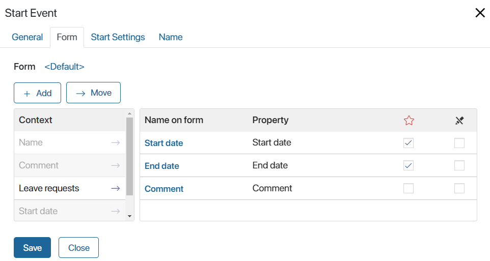
Specify which variables are required and which are read only  . Note that when using the Read only option, only the field storing the item that the process is started for will be filled with a value.
. Note that when using the Read only option, only the field storing the item that the process is started for will be filled with a value.
If process instance names are generated by template, the Name field will not be displayed on the start event form even if it is added.
To configure the form, you can also use a ready-made form template or create a new one. For more information on creating form templates, read the Forms tab article.
Start Settings tab
On this tab, you can configure how to start the process. You can set up a scheduled start event taking into account the current business calendar.
начало внимание
If the work schedule has changed, processes started based on non-working hours should be published again.
конец внимание
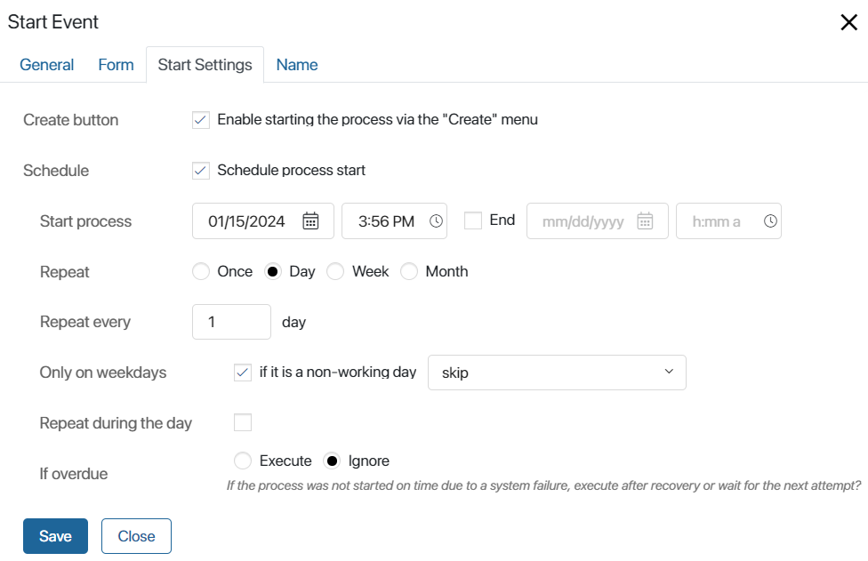
Create button. If you select this option, an employee will be able to start the process from the main page of the system by clicking the Create button.
Schedule. This option allows you to run the process on a schedule.
- Start process. In this field, the current date and time are filled out automatically. If the process is run repeatedly in certain periods of time, this data is used to calculate each next run.
- End. The date and time after which the system will no longer initiate the process.
- Repeat. Specify how often the process will be launched:
- Once. The process will be started once. If you select the additional option Repeat throughout the day, the system will repeatedly re-initiate the process during the day in certain periods of time.
- Day. Select this option if you want to run the process every day or every few days. In the Repeat every X days field you can specify how often the process must be started. In addition, you can customize the behavior of the system if the event falls on a non-working day.
- Week. Select this option if you want to run the process every week or every few days. If necessary, select the day of the week when the process should start. In addition, you can specify how the system must behave if the start falls on a non-working day.
For example, the weekly reporting process will run every week on Mondays at 11 o'clock in the morning. If the start falls on a non-working day, the process will not be launched this week.
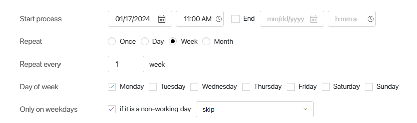 - Month. The process will start every month or every few months. Specify days when the system must initiate the process.
For example, the payroll process will run on the 10th and 20th day of the month. If these dates fall on a non-working day, then the process start will be postponed until the nearest working day.
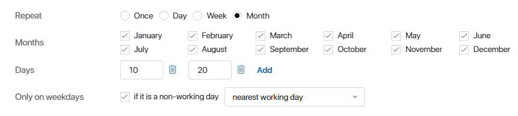
- Only on weekdays. This option allows you to configure the behavior of the system if the start falls on a non-working day.
- Skip. The process started will be skipped.
- Previous. The process will be started the previous working day.
- Next. The process will be started the next working day.
- Nearest working day. The process will be started on the nearest working day.
- If overdue. This options determines the behavior of the system if the server was unavailable at the moment the process start was scheduled.
Note that if a process start is scheduled, the start event form must be empty.
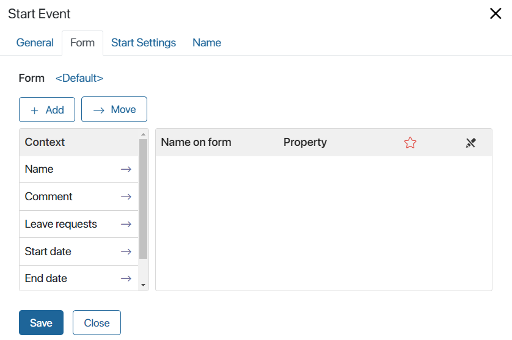
Name tab
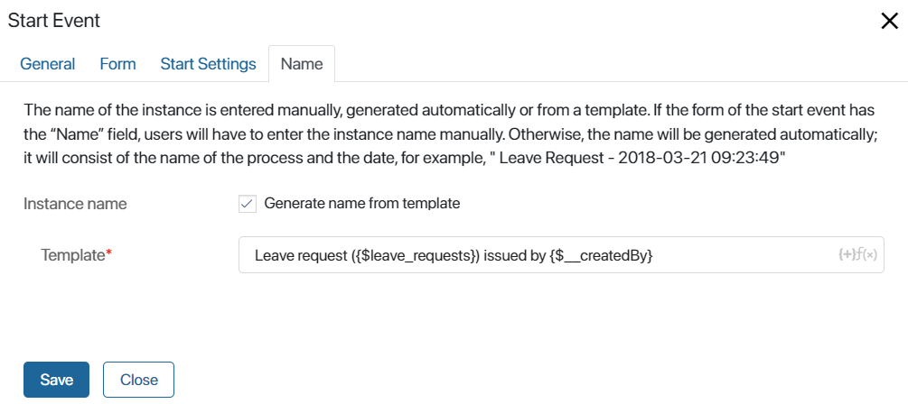
On this tab, you can add a name template for the process instance. You won’t have to enter the name manually every time you start the process.
In the Template* field, enter a name for the process instance, if necessary, add a context variable, for example, the initiator’s full name. The list of available variables is opened by clicking on the + icon in the right corner of the field.
Timer intermediate event

A timer intermediate event represents a delay in the process for a specific period of time. The number of intermediate events is not limited, they can be located anywhere in the process between the start and end events.
In the event settings, you can change its name and specify how the go-off time is calculated.
Exact time
If you select this option, you can specify the exact time, after which the process execution will continue. For example, the process will wait for a customer response for two days. Once this period is over, the timer goes off and the process continues.
You can specify a deadline according to the current business calendar. In this case, non-working hours will not be included in the waiting period. For example, if a timer start falls on a weekend, the process will continue on the next business day. If the business calendar settings change, you should restart the timer and republish the process again to take into account a new work schedule.
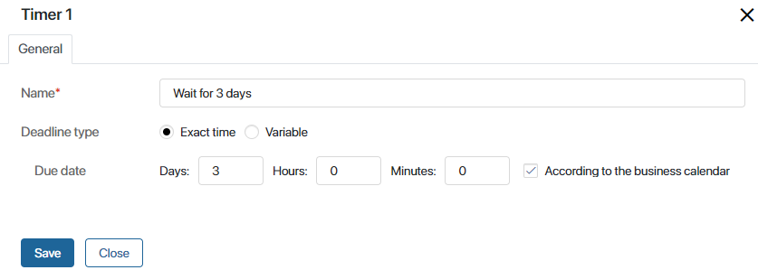
Variable
You can specify the day and the time when the process execution will continue using a context variable.
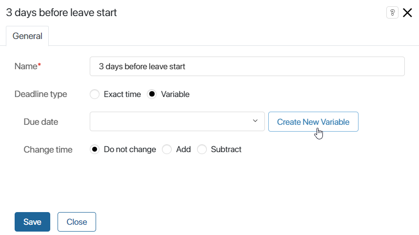
- Due date. Select a variable from the list or add a new variable. To do this, click Create New Variable. In the window that opens, fill in all the required fields: Display Name* and Property Name*.
When creating a property, you cannot change the type because timer events always use Date/Time type variables. However, you can specify additional parameters:
- Set current date and time. The current date and time will be inserted in the field automatically (according to the time zone of the user).
- Do not require to specify time. When filling in the Date/Time variable, the user is not required to specify the time.
- Change time. This option allows you to add or subtract days, hours, and minutes to the time stored in the variable. Select the Add or Subtract option, enter the adjustment amount, and specify whether the business calendar needs to be used. The deadline after which the process will resume will increase or decrease by the amount of time you specify.
End event
 An end event indicates where a process or one of its branches ends. End events cannot have outgoing connectors. The number of such events in the process is unlimited. To improve the readability of the process diagram, you can specify the name of the end event in its settings.
An end event indicates where a process or one of its branches ends. End events cannot have outgoing connectors. The number of such events in the process is unlimited. To improve the readability of the process diagram, you can specify the name of the end event in its settings.
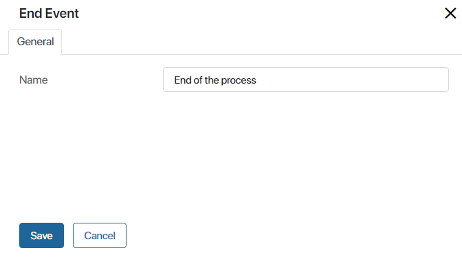
Found a typo? Select it and press Ctrl+Enter to send us feedback